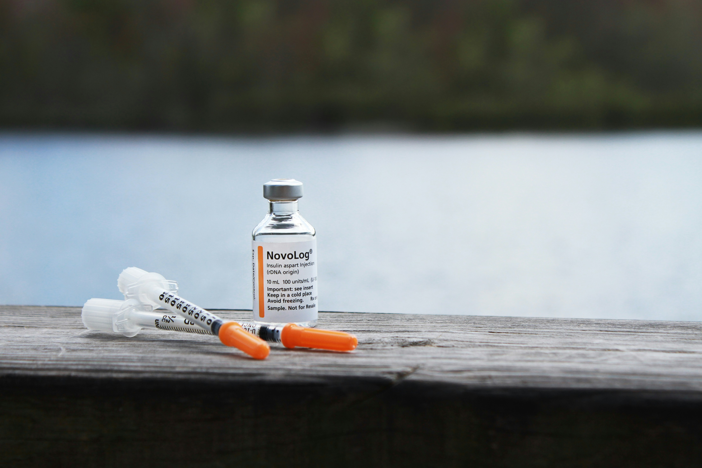
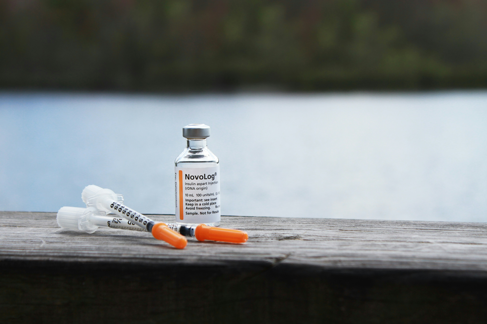
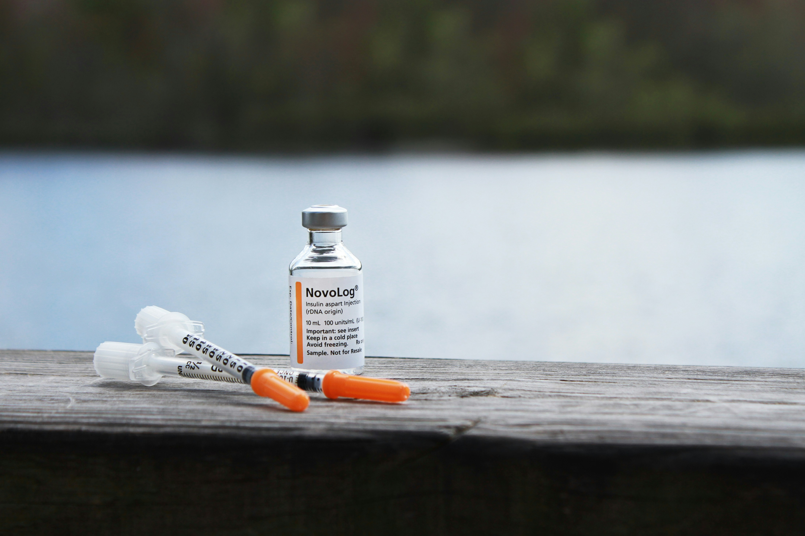

URGNT

URGNT

Indian public hospitals are facing a significant challenge due to overcrowding: doctors and hospital staff struggle to identify patients who require immediate medical attention. This often leads to unnecessary delays for patients who are critically ill, and it results in inefficiencies that slow down the overall treatment process.
To solve this problem, we’ve developed a solution that makes use of a patient’s ABHA ID to seamlessly pull and integrate crucial medical information, including previous diagnoses, lab reports, and other relevant health data that may be stored across various emails or hospital portals. This data is combined with a quick symptom assessment, which can be done via text or voice input in multiple languages, ensuring that all patients, regardless of language, can access the system easily.
Using this data, our system produces a real-time "priority score" for each patient. This score helps guide hospital staff in making quick and accurate decisions regarding which patients need to be attended to immediately. By implementing this triage system, we aim to reduce wait times for the most critical patients and ensure better resource allocation across hospital departments.
By equipping healthcare teams with smarter, more efficient tools, our platform makes it possible for hospitals to ensure that patients who require urgent care are attended to promptly, minimizing unnecessary delays. Our goal is to transform healthcare services and significantly improve the experience of millions of patients throughout India.
"In a world where every second counts, our technology empowers hospitals to act faster, prioritize smarter, and deliver care where it’s needed most." — Dr. Rajesh Kumar, Healthcare Innovation Expert
Our algorithm has helped reduce patient wait times by 25%, ensuring that urgent cases receive immediate attention.
Our system has increased the accuracy of triage decisions by 67%, ensuring more accurate prioritization of patients in need of urgent care.
Hospital resource utilization has improved by 14%, with more effective allocation to high-priority cases, reducing unnecessary strain on medical teams.
Patient satisfaction has improved by 10%, with quicker and more accurate medical attention, leading to better overall experiences in the hospital.
Our algorithm has reduced emergency room bottlenecks by 30%, enabling smoother patient flow and quicker medical attention for all.
© Copyright Debrup Saha 2024


{kind=link}
{kind=link}
{kind=link}
{kind=link}
{kind=link}
{kind=link}
{kind=link}
{kind=link}
{kind=link}
{kind=link}